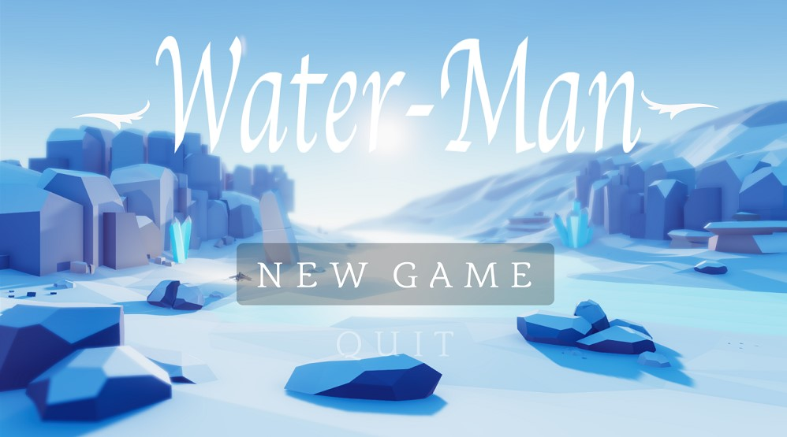

Game Concept
Water-Man is a unity third-person perspective 3D shooting puzzle-solving game that consists of three levels in total. The game involves the player use strategies to solve different puzzles. At the same time, the game contains a shooting game’s element.
The player will use a water gun to kill enemies. Compared with other 3D puzzle-solving games, the most unique part of the game is that players can interact with water. Moreover, the game objects and puzzles are related to the element of water.
